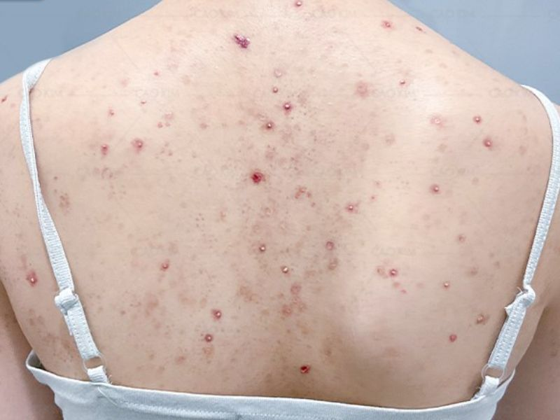
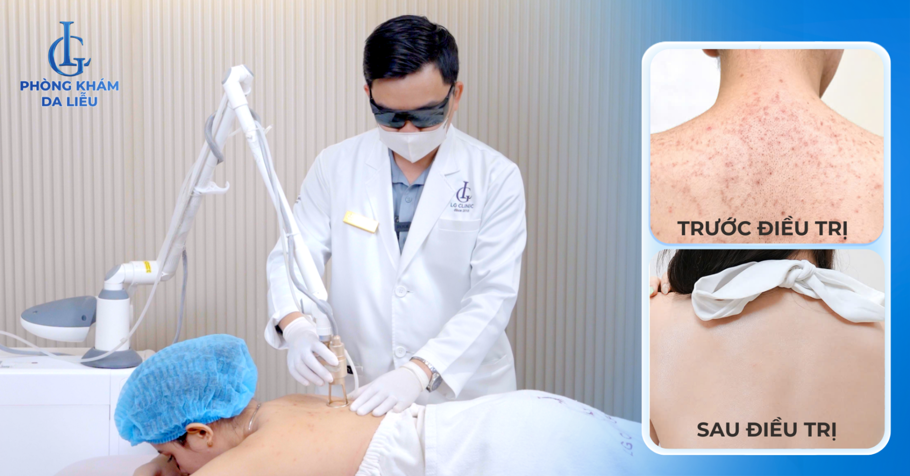

Viêm nang lông ở lưng là tình trạng viêm xảy ra tại các nang lông do tác động của vi khuẩn, nấm hoặc yếu tố cơ học. Đây là bệnh lý da liễu phổ biến, đặc biệt ở người có da dầu, tăng tiết mồ hôi hoặc thường xuyên vận động. Vùng lưng với mật độ tuyến bã nhờn cao và khó quan sát khiến việc phát hiện sớm trở nên khó khăn.
Nếu không kiểm soát đúng nguyên nhân, tình trạng này có thể tái phát nhiều lần, gây thâm sau viêm và ảnh hưởng đến chất lượng da. Việc hiểu rõ yếu tố gây bệnh giúp lựa chọn hướng xử lý phù hợp và hạn chế biến chứng lâu dài.
Viêm nang lông ở lưng là gì?
Nang lông là cấu trúc nằm trong lớp trung bì, nơi sợi lông phát triển và liên kết với tuyến bã nhờn. Khi nang lông bị bít tắc hoặc bị vi sinh vật xâm nhập, cơ thể sẽ kích hoạt phản ứng viêm nhằm chống lại tác nhân gây hại.
Biểu hiện lâm sàng thường bao gồm:
- Sẩn đỏ hoặc mụn mủ nhỏ tập trung quanh chân lông
- Da sần sùi, kém mịn khi chạm vào
- Ngứa nhẹ hoặc châm chích
- Một số trường hợp đau khi ấn vào vùng tổn thương
Tổn thương có thể xuất hiện rải rác hoặc tập trung thành từng cụm ở lưng trên, hai bên vai hoặc dọc cột sống.

Nguyên nhân gây ra viêm nang lông ở lưng
1. Nhiễm vi khuẩn
Tác nhân phổ biến nhất là tụ cầu vàng (Staphylococcus aureus). Vi khuẩn này tồn tại trên da và có thể xâm nhập vào nang lông khi hàng rào bảo vệ da bị suy yếu.
- Da trầy xước do gãi hoặc chà xát mạnh
- Vệ sinh da không đúng cách
- Dùng chung khăn tắm, dao cạo
- Không làm sạch da sau khi đổ nhiều mồ hôi
Khi vi khuẩn phát triển quá mức, nang lông sưng đỏ và hình thành mụn mủ nhỏ.
2. Nhiễm nấm men
Một số trường hợp viêm nang lông lưng liên quan đến nấm Malassezia. Dạng này thường gây ngứa nhiều và dễ lan rộng nếu không điều trị đúng hướng.
- Ra nhiều mồ hôi kéo dài
- Mặc quần áo bó sát, bí da
- Sống trong môi trường nóng ẩm
Việc sử dụng thuốc không phù hợp, đặc biệt là lạm dụng kháng sinh, có thể làm mất cân bằng hệ vi sinh và khiến tình trạng nặng hơn.

3. Bít tắc lỗ chân lông do tăng tiết bã nhờn
Vùng lưng có mật độ tuyến bã nhờn cao. Khi bã nhờn kết hợp với tế bào chết và bụi bẩn, nang lông dễ bị tắc nghẽn. Môi trường kín này tạo điều kiện thuận lợi cho vi khuẩn hoặc nấm phát triển.
- Da dầu hoặc cơ địa tăng tiết bã nhờn
- Không tẩy tế bào chết định kỳ
- Sử dụng sản phẩm dưỡng thể gây bít tắc
Tình trạng bít tắc kéo dài làm tăng nguy cơ viêm và tái phát nhiều lần.
4. Ma sát và áp lực cơ học
Lưng là vùng da thường xuyên tiếp xúc với quần áo bó sát, balo hoặc ghế tựa cứng. Ma sát lặp lại khiến lớp biểu bì bị tổn thương vi thể, làm suy yếu hàng rào bảo vệ tự nhiên của da.
Những người tập gym, vận động ngoài trời hoặc mặc trang phục không thấm hút mồ hôi có nguy cơ cao hơn.
5. Tăng tiết mồ hôi kéo dài
Mồ hôi nhiều khiến da ẩm ướt và thay đổi môi trường vi sinh trên bề mặt. Khi không được làm sạch kịp thời, đây là điều kiện thuận lợi để vi sinh vật phát triển và gây viêm nang lông.
Đặc biệt trong khí hậu nóng ẩm, tình trạng này có xu hướng tái diễn theo chu kỳ.
6. Suy giảm miễn dịch hoặc bệnh lý nền
Người mắc đái tháo đường, suy giảm miễn dịch hoặc sử dụng corticoid dài ngày có khả năng chống lại vi sinh vật kém hơn. Do đó, viêm nang lông có thể xuất hiện thường xuyên và khó kiểm soát.
Yếu tố nguy cơ khiến bệnh tái phát
- Không điều trị dứt điểm đợt viêm trước
- Tự ý dùng thuốc khi chưa xác định nguyên nhân
- Thói quen gãi, chà xát mạnh vùng lưng
- Không thay quần áo, ga giường thường xuyên
Việc điều trị sai nguyên nhân, ví dụ dùng thuốc kháng sinh trong trường hợp do nấm, có thể khiến tình trạng kéo dài và khó kiểm soát.
Khi nào cần thăm khám chuyên khoa?
Người bệnh nên đến cơ sở da liễu khi:
- Tổn thương lan rộng hoặc đau nhiều
- Tái phát nhiều lần trong thời gian ngắn
- Có dấu hiệu nhiễm trùng sâu
- Điều trị tại nhà không cải thiện sau 1–2 tuần
Bác sĩ có thể chỉ định thuốc bôi, thuốc uống hoặc các phương pháp hỗ trợ tùy theo nguyên nhân cụ thể. Chẩn đoán chính xác giúp giảm nguy cơ tái phát và hạn chế để lại thâm sẹo.
Kết luận
Nguyên nhân gây ra viêm nang lông lưng khá đa dạng, bao gồm nhiễm vi khuẩn, nấm, bít tắc lỗ chân lông và tác động cơ học kéo dài. Việc xác định đúng tác nhân đóng vai trò quan trọng trong kiểm soát bệnh lý này.
Chăm sóc da đúng cách, giữ vệ sinh và thăm khám kịp thời khi cần thiết sẽ giúp hạn chế nguy cơ tái phát và bảo vệ cấu trúc da lâu dài.
Tư vấn và thăm khám cá nhân hóa
Khi viêm nang lông ở lưng kéo dài hoặc tái diễn nhiều lần, người bệnh nên được đánh giá trực tiếp bởi bác sĩ chuyên khoa để xác định chính xác nguyên nhân và mức độ tổn thương. Tại Phòng khám Da Liễu LG, quá trình thăm khám được thực hiện theo hướng cá nhân hóa, xây dựng phác đồ phù hợp với từng tình trạng da cụ thể. Việc theo dõi định kỳ giúp điều chỉnh hướng điều trị dựa trên đáp ứng thực tế của làn da.
